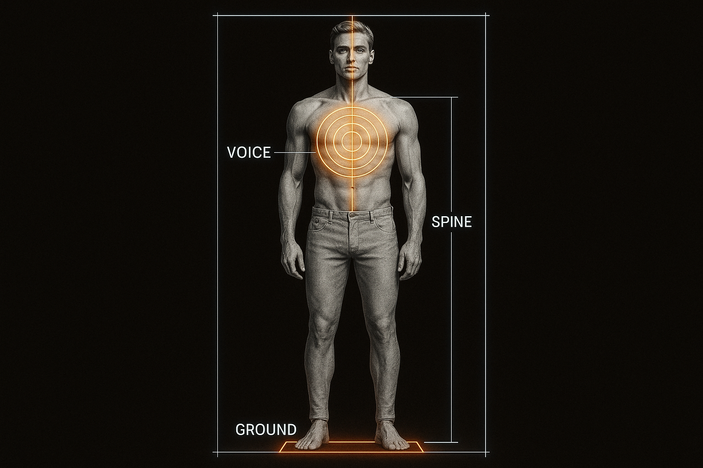

How to Own Any Room in 20 Seconds—Without Saying a Word
An IRONCLAD FOUNDATION Module
PROMISE
You will master the physical and vocal systems that broadcast calm authority. You will learn to control the first impression before you ever speak, replacing nervous energy with a magnetic presence that commands respect and intrigue.
The transformation from invisible to commanding presence.
THE FLAW · THE INVISIBLE APOLOGY
Most men enter a social setting apologizing for their existence. Hunched shoulders, a quiet voice, and shifty eye contact broadcast weakness and are immediately categorized as "low-impact."
"Your first twenty seconds broadcast more than the next two minutes of words. We will hard-wire your presence to work for you."
THE DOCTRINE · PHYSIOLOGY COMMANDS PSYCHOLOGY
Confidence is not a feeling you wait for; it is a physical state you create. By controlling your body, you control your state. By controlling your state, you control the environment.
The direct connection between body position and mental state.
The Authority Stack
Ground: Your feet claim territory. They signal you belong
Spine: Your posture signals ease and readiness
Voice: Your tone seals the frame, powered by breath, not anxiety
PROTOCOL · THE PRE-APPROACH TRI-CHECK
Run this silent, 10-second check before entering any new social environment.
1. State Check (Internal)
Two deep diaphragm breaths. Micro-shoulder roll (back and down). Recall an anchor memory of calm confidence.
2. Signal Check (External)
Scan for receptiveness: Brief eye contact? Open body language? Available attention? These are your entry signals.
3. Environment Check (Context)
Calibrate your approach. Quiet spaces require different energy than active venues. Adjust accordingly.
PROTOCOL · NERVOUS SYSTEM PREPARATION
Just as athletes warm up before competition, prepare your social readiness with low-risk interactions to prove to your brain that connection is safe.
The Exposure Ladder
Gradually build social confidence through manageable interactions. Start with minimal verbal exchanges and progress to full conversations.
"Action dissolves anxiety. We start with steps so small that success is inevitable, creating unstoppable momentum."
MASTERING THE AUTHORITY STACK
Your physical presence is your first and most powerful communication tool. Master these three elements:

The physical foundation of commanding presence.
Feet: Shoulder-width apart, weight evenly distributed - claim your space
Spine: Elongated but relaxed - crown reaching toward ceiling
Voice: Powered from diaphragm - speak as if addressing the back of the room
THE DRILL · 7-DAY PRESENCE FORGE
Your mission is to rewire your nervous system and embody authority. Each day, perform these actions and log your completion.